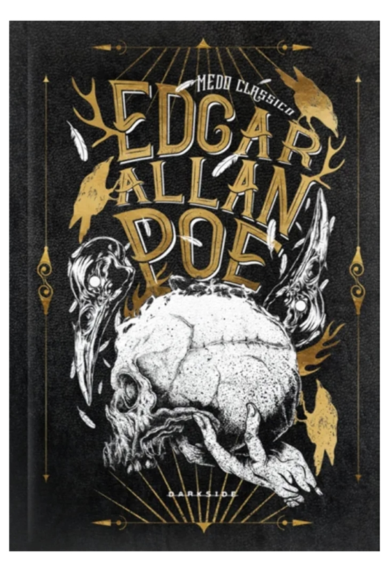

Medo clássico - Edgar Allan Poe
Sinopse
Nunca mais houve um autor como Edgar Allan Poe. Nunca mais haverá uma edição como esta. Edgar Allan Poe: Medo Clássico é uma homenagem ao mestre da literatura fantástica em todos os detalhes: da capa dura à tradução primorosa, além das belíssimas xilogravuras do artista gráfico Ramon9l Rodrigues. Pela primeira vez, os contos de Poe estão divididos por temas que ajudam a visualizar a grandeza de sua obra: a morte, narradores homicidas, mulheres etéreas, aventuras, além das histórias completas do detetive Auguste Dupin, personagem que inspirou Sherlock Holmes. Edgar Allan Poe: Medo Clássico apresenta ainda o poema “O Corvo” na sua versão original em inglês e nas traduções para o português de Machado Assis e de Fernando Pessoa, além do clássico ensaio sobre o poema, “A filosofia da composição”. O livro traz ainda o prefácio do poeta francês Charles Baudelaire, admirador do autor e seu primeiro tradutor na França.